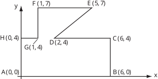

Long description: fig15

Alt text: A graph showing a closed contour defined by points A(0, 0), B(6, 0), C(6, 4), D(2, 4), E(5, 7), F(1, 7), and H(0, 4).
This description was generated by AI and has not been verified by a human. If you spot an error, please use the feedback link below.
- The image displays a coordinate system with an x-axis ranging from 0 to 6 and a y-axis ranging from 0 to 7.
- A closed, irregular polygon shape is drawn, defined by the vertices A(0, 0), B(6, 0), C(6, 4), D(2, 4), E(5, 7), F(1, 7), and H(0, 4).
- The bottom edge connects A(0, 0) to B(6, 0) along the x-axis.
- The right vertical edge connects B(6, 0) to C(6, 4).
- The top right segment connects C(6, 4) to D(2, 4) along the line segment y = 4.
- A diagonal line connects D(2, 4) to E(5, 7).
- The top horizontal segment connects E(5, 7) to F(1, 7) along the line segment y = 7.
- A vertical line connects F(1, 7) to H(1, 4) (Note: The points shown are F(1, 7) and H(0, 4), but the contour segment seems to be H(0, 4) to F(1, 7) through a connection to the y-axis).
- The left edge connects H(0, 4) back to A(0, 0) along the y-axis.
- The overall shape encloses an area bounded by the specified points.